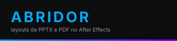

olá! vamos instalar o ABRIDOR no After Effects.
a extensão será copiada para este computador: depois de instalada ela não depende mais desta pasta. para atualizar, rode o instalador da versão nova.
conferindo o que o ABRIDOR precisa:
tudo certo!
tudo pronto! o que você quer fazer?
ABRIDOR v1.3.0 instalado! (17 arquivos)
reinicie o After Effects e abra o painel em:
Window > Extensions > ABRIDOR